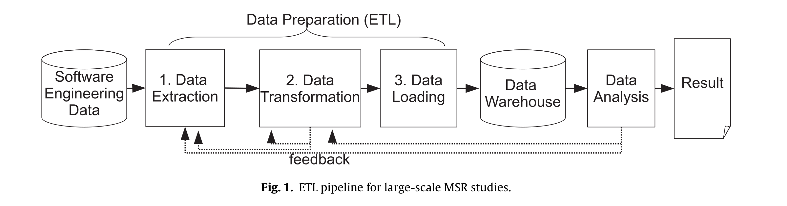

class: middle ## Using Pig as a data preparation language for large-scale mining software repositories studies: An experience report ### By Weiyi Shang, Bram Adams, and Ahmed E. Hassan ##### Presentation by Wenhan Zhu (Cosmos) ??? Notes for the _first_ slide! --- class:center, middle  .footnote[Figure taken from paper] --- # Main contributions 1. Using [Apache Pig](https://pig.apache.org) to implement scalable and modular tools for MSR. 2. Improvement over Hadoop implementation --- # Pig 1. What is Pig? Pig is a Hadoop-based platform for analyzing large scale of data. 2. Why Pig? Modular desgin leads to more reusable code --- #Pig example code from paper Sample code to measure evolution of LOC (Lines of Code) in a MSR study ```bash RAWDATA = load ’ $inputdata ’ using ExtPigStorage () as ( filename : chararray , filecontent : chararray ) ; HISTORYLOG = foreach RAWDATA generate ExtractLog ( filename , filecontent ) ; HISTORYVERSIONS = foreach HISTORYLOG generate ExtractVersions ( $0 ) ; CODE = foreach HISTORYVERSIONS generate ExtractSourceCode ( $0 ) ; LOC = foreach CODE generate GenLOC ( $0 ) ; dump LOC ; ``` --- # Comparison to Hadoop 1. Running Time 2. LOC to Migrate --- ## Things I like: 1. Example code with step by step explanation 2. Easy to understand figures 3. Thorough explanation on every aspect of the pipeline ## Things I would like to see improved: 1. Other migrations of software and comparisons 2. More information on J-REX 3. Typesetting on code segment --- class:center, middle # Discussions